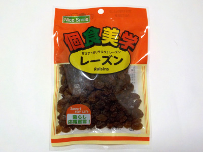

兵庫県神戸市兵庫区出在家町1-1先
更新日 : 2026/06/25

植物油脂が入ったトルコ産サルタナレーズンです。粒同士がくっいてなくてサラサラしてるので、つまんで食べ易いです。
パッケージに「甘さすっきり」と書かれているように、甘みが少し少ないです。甘さが足りないので、一度に沢山食べちゃいました。
後、粒が小さかったです。
2024/01/23 値段が安いので、たぶんまた買います。
2026/06/25 今回買ったのは大きい粒も小さい粒もいろいろありました。73g 108円でした。
【おいしいものを食べよう。】【たくさん寝よう。】
【ソロ活をしよう!】【季節感のあることをしよう。】【動画視聴はほどほどに。】【当サイトの全てのコンテンツは無断転載禁止です。】